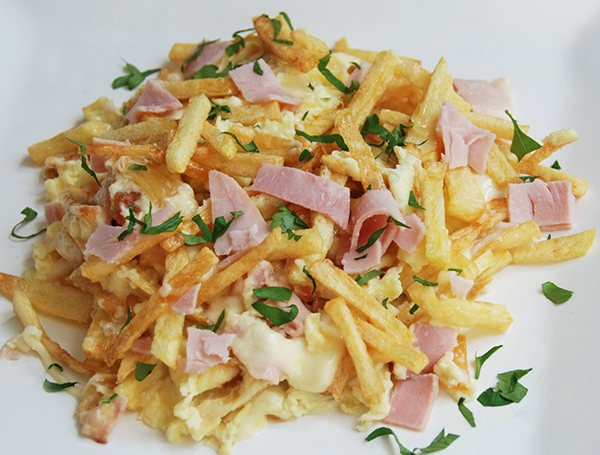

Menú Principal
Contacto
Sucursales
Registro
Revuelto de Gramajo
Ingredientes para 3 porciones
3 papas
200g de jamón cocido
200g de queso cremoso
4 huevos
aceite
sal y pimienta
perejil

Preparación
- Pelar las papas, lavarlas y luego cortarlas en bastones muy finitos.
- Freír en abundante aceite caliente.
- Retirar y colocar sobre un plato con papel absorbente.
- Colocar en una sarten el jamón y el queso cortados en cubos pequeños.
- Batir los huevos en un bowl e incorporarlos a la preparación, luego agregar las papas.
- Condimentar con sal, pimienta y perejil picado.
Tip: Se le puede incorporar vegetales como cebolla y arvejas. Esta receta es apta para celiacos.